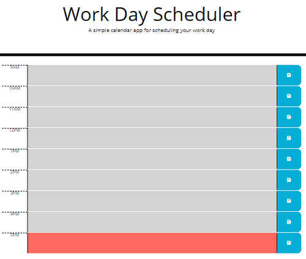
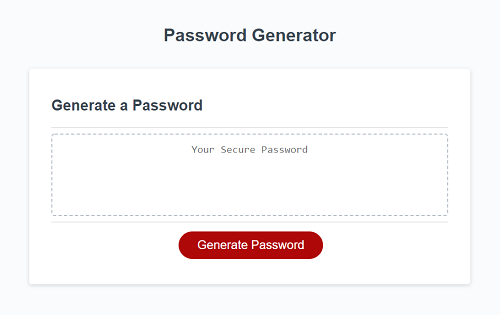

Portfolio
Find Tune:
Find Tune is a mobile-friendly interactive app that provides ten song previews as well as a random GIF. This app pulls two different APIs- one from Deezer, and one from GIPHY. You can check it out here: https://justinkellogg89.github.io/find-tune/

Work Day Scheduler:
This is an page made with JQuery. It has time slots from 9AM - 5PM, and the colors of the slots change depending on the time. You can input information in the slots, and they will be saved in local storage. You can check it out here: https://sean-93.github.io/Work-Day-Scheduler/

Work Day Scheduler:
Here is a random password generator that I made. You can choose between 8 and 128 characters, as well as choose if you want to use upper or lowercase, numbers, or special characters. You can check it out here: https://sean-93.github.io/random-password-generator/